OLL 1
Dot · 79 setupscubeio-oll-01-v1Setup & algorithms
F R' F' R U2 F R' F' R2 U2 R'
R U2 R' R' F R F' U2 R' F R F'
R U2 R2 F R F' U2 R' F R F'
y R U' R2 D' r U' r' D R2 U R'
f R U R' U' R f' U' r' U' R U M'
L' U2 L2 F' L' F U2 L F' L' F
78 verified cases · U face + all four side rows · yellow U / green F · OLL uses orientation only
Every published and trainer setup preserves F2L. Source data: J Perm and SpeedCubeDB.
cubeio-oll-01-v1F R' F' R U2 F R' F' R2 U2 R'
R U2 R' R' F R F' U2 R' F R F'
R U2 R2 F R F' U2 R' F R F'
y R U' R2 D' r U' r' D R2 U R'
f R U R' U' R f' U' r' U' R U M'
L' U2 L2 F' L' F U2 L F' L' F
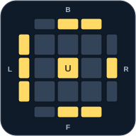
cubeio-oll-02-v1f U R U' R' f' F U R U' R' F'
r U r' U2 r U2 R' U2 R U' r'
y' F R U R' U' F' f R U R' U' f'
y' F R U R' U' S R U R' U' f'
F R U R' U' F' f R U R' U' f'
y' R U' R2 D' r U r' D R2 U R'
F R U R' U' S R U R' U' f'
y r U r' U2 R U2 R' U2 r U' r'
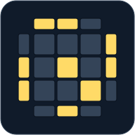
cubeio-oll-03-v1F U R U' R' F' U f U R U' R' f' y y'
r' R2 U R' U r U2 r' U M'
y F U R U' R' F' U F R U R' U' F'
y' f R U R' U' f' U' F R U R' U' F'
y R' F2 R2 U2 R' F R U2 R2 F2 R
M R U R' U r U2 r' U M'
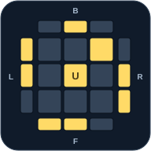
cubeio-oll-04-v1F U R U' R' F' U' f U R U' R' f' y y'
M U' r U2 r' U' R U' R' M'
y F U R U' R' F' U' F R U R' U' F'
y' f R U R' U' f' U F R U R' U' F'
y' R' F2 R2 U2 R' F' R U2 R2 F2 R
R' F R F' U' S R' U' R U R S'
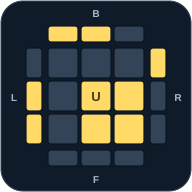
cubeio-oll-05-v1r' U' R U' R' U2 r
l' U2 L U L' U l
y2 r' U2 R U R' U r
r' U2 R U R' U r
y2 l' U2 L U L' U l
y2 R' F2 r U r' F R
y2 R' F2 L F L' F R
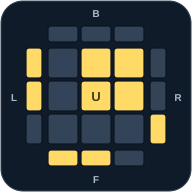
cubeio-oll-06-v1r U R' U R U2 r'
r U2 R' U' R U' r'
F U' R2 D R' U' R D' R2 U F'
y2 l U2 L' U' L U' l'
L F2 l' U' l F' L'
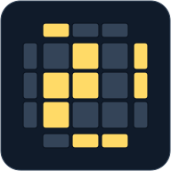
cubeio-oll-07-v1r U2 R' U' R U' r'
r U R' U R U2 r'
S' R U R' U R U2 R' U S
L' U2 L U2 L F' L' F
y2 f R U R' U' f' y2 F R' F' r U R U' r'
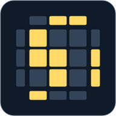
cubeio-oll-08-v1r' U2 R U R' U r y2 x2 z2
l' U' L U' L' U2 l
R U2 R' U2 R' F R F'
y2 r' U' R U' R' U2 r
R' F' r U' r' F2 R
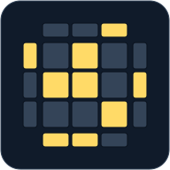
cubeio-oll-09-v1F U R U' R2 F' R U R U' R' y' y
R U R' U' R' F R2 U R' U' F'
y R U R' U' R' F R R U R' U' F'
y R U R' U' R' F R2 U R' U' F'
R U2 R' U' S' R U' R' S
y2 F' U' F r U' r' U r U r'
y' L' U' L U' L F' L' F L' U2 L
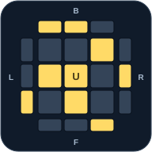
cubeio-oll-10-v1R U2 R' F R' F' R U' R U' R'
R U R' U R' F R F' R U2 R'
y2 r U R' U R U' R' U' r' R U R U' R'
y F U F' R' F R U' R' F' R
y M' R' U2 R U R' U R U M
y2 L' U' L U L F' L2 U' L U F
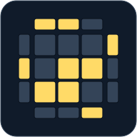
cubeio-oll-11-v1M U' R U2 R' U' R U' R2 r
r U R' U R' F R F' R U2 r'
y2 r' R2 U R' U R U2 R' U M'
M R U R' U R U2 R' U M'
r' R2 U R' U R U2 R' U M'
y2 r U R' U R' F R F' R U2 r'
S R U R' U R U2 R' U2 S'
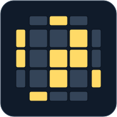
cubeio-oll-12-v1F U R U' R' F' U' F U R U' R' F'
M' R' U' R U' R' U2 R U' R r'
y' M' R' U' R U' R' U2 R U' M
F R U R' U' F' U F R U R' U' F'
y' S R' U' R U' R' U2 R U2 S'
y M L' U' L U' L' U2 L U' M'
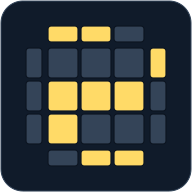
cubeio-oll-13-v1F' U' F r U' r' U r U r'
F U R U' R2 F' R U R U' R'
r U' r' U' r U r' y' R' U R
r U' r' U' r U r' F' U F
F U R U2 R' U' R U R' F'
y2 f R U R2 U' R' U R U' f'
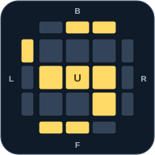
cubeio-oll-14-v1F U F' R' F R U' R' F' R
R' F R U R' F' R F U' F'
r U R' U' r' F R2 U R' U' F'
l' U l U l' U' l F U' F'
S R U R' U' R' F R2 U R' U' f'
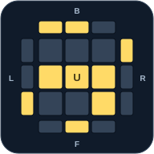
cubeio-oll-15-v1r' U' r U' R' U R r' U r
l' U' l L' U' L U l' U l
y2 r' U' r R' U' R U r' U r
r' U' r R' U' R U r' U r
y2 l' U' l L' U' L U l' U l
r' U' M' U' R U r' U r
y2 R' F' R L' U' L U R' F R
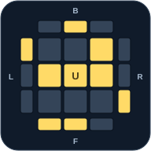
cubeio-oll-16-v1r U r' U R U' R' r U' r'
r U r' R U R' U' r U' r'
r U M U R' U' r U' r'
y2 R' F R U R' U' F' R U' R' U2 R
y2 l U l' L U L' U' l U' l'
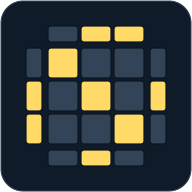
cubeio-oll-17-v1F R' F' R U2 F R' F' R U' R U' R'
F R' F' R2 r' U R U' R' U' M'
y2 R U R' U R' F R F' U2 R' F R F'
R U R' U R' F R F' U2 R' F R F'
y2 F R' F' R U S' R U' R' S
y2 F R' F' R2 r' U R U' R' U' M'
y' F' r U r' U' S r' F r S'
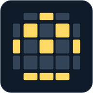
cubeio-oll-18-v1r' U2 R U R' U r2 U2 R' U' R U' r'
r U R' U R U2 r' r' U' R U' R' U2 r
y R U2 R' R' F R F' U2 M' U R U' r'
y R U2 R2 F R F' U2 M' U R U' r'
r U R' U R U2 r2 U' R U' R' U2 r
y F S' R U' R' S R U2 R' U' F'
R D r' U' r D' R' U' R2 F R F' R
cubeio-oll-19-v1F R' F' R M U R U' R' U' M'
r' R U R U R' U' M' R' F R F'
M U R U R' U' M' R' F R F'
y S' R U R' S U' R' F R F'
R' U2 F R U R' U' F2 U2 F R
r' R U R U R' U' r R2 F R F'
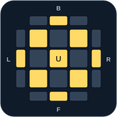
cubeio-oll-20-v1r U R' U' M2 U R U' R' U' M'
r U R' U' M2 U R U' R' U' M'
r' R U R U R' U' M2 U R U' r'
M' U2 M U2 M' U M U2 M' U2 M
S' R U R' S U' M' U R U' r'
S R' U' R U R U R U' R' S'

cubeio-oll-21-v1R U R' U R U' R' U R U2 R' y' y
R U2 R' U' R U R' U' R U' R'
y R U R' U R U' R' U R U2 R'
R U R' U R U' R' U R U2 R'
y R U2 R' U' R U R' U' R U' R'
y F R U R' U' R U R' U' R U R' U' F'
R' U' R U' R' U R U' R' U2 R
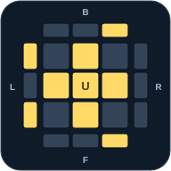
cubeio-oll-22-v1R' U2 R2 U R2 U R2 U2 R'
R U2 R2 U' R2 U' R2 U2 R
R U2 R2 U' R2 U' R2 U' U' R
R' U2 R2 U R2 U R2 U2 R'
f R U R' U' S' R U R' U' F'
f R U R' U' f' F R U R' U' F'
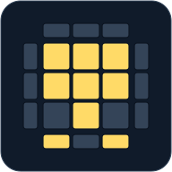
cubeio-oll-23-v1R U2 R D R' U2 R D' R2
R2 D' R U2 R' D R U2 R
y2 R2 D R' U2 R D' R' U2 R'
R2 D R' U2 R D' R' U2 R'
y2 R2 D' R U2 R' D R U2 R
R U R' U R U2 R2 U' R U' R' U2 R
y R U R' U' R U' R' U2 R U' R' U2 R U R'
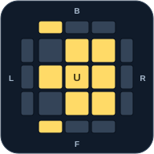
cubeio-oll-24-v1F R' F' r U R U' r'
r U R' U' r' F R F'
y R U R D R' U' R D' R2
y2 R' F' r U R U' r' F
y' x' R U R' D R U' R' D' x
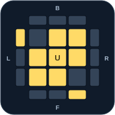
cubeio-oll-25-v1R' F' r U R U' r' F y' y
F' r U R' U' r' F R
y' R' F R B' R' F' R B
y F' r U R' U' r' F R
R U2 R D R' U2 R D' R2
F R' F' r U R U' r'
x R' U R D' R' U' R D x'
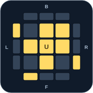
cubeio-oll-26-v1R U R' U R U2 R' y' y
R U2 R' U' R U' R'
y' R' U' R U' R' U2 R
y R U2 R' U' R U' R'
R' U' R U' R' U2 R
y2 L' U' L U' L' U2 L
y2 L' U R U' L U R'
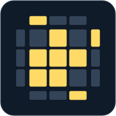
cubeio-oll-27-v1R U2 R' U' R U' R'
R U R' U R U2 R'
y' R' U2 R U R' U R
y L' U2 L U L' U L
y2 L U L' U L U2 L'
cubeio-oll-28-v1R U R' U' M' U R U' r'
r U R' U' r' R U R U' R'
r U R' U' M U R U' R'
R' F R S R' F' R S'
y2 M' U M U2 M' U M
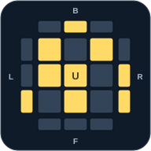
cubeio-oll-29-v1M F R' F' R U R U' R' U' M'
R U R' U' R U' R' F' U' F R U R'
y R U R' U' R U' R' F' U' F R U R'
r2 D' r U r' D r2 U' r' U' r
y S' R U R' U' R' F R F' U S
M U R U R' U' R' F R F' M'
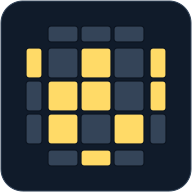
cubeio-oll-30-v1F U R U2 R' U R U2 R' U' F' y2 x2 z2
F R' F R2 U' R' U' R U R' F2
F U R U2 R' U' R U2 R' U' F'
y2 F U R U2 R' U' R U2 R' U' F'
y' r' D' r U' r' D r2 U' r' U r U r'
y2 F R' F R2 U' R' U' R U R' F2
y S' R' U' R f R' U R U' F'
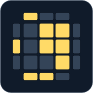
cubeio-oll-31-v1R' F R U R' U' F' U R
R' U' F U R U' R' F' R
y2 S' L' U' L U L F' L' f
y S R U R' U' f' U' F
y' F R' F' R U R U R' U' R U' R'

cubeio-oll-32-v1f R' F' R U R U' R' S'
L U F' U' L' U L F L'
y2 S R U R' U' R' F R f'
S R U R' U' R' F R f'
y2 L U F' U' L' U L F L'
R U B' U' R' U R B R'
y' R' F R F' U' r U' r' U r U r'
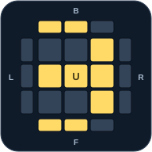
cubeio-oll-33-v1F R' F' R U R U' R'
R U R' U' R' F R F'
y2 L' U' L U L F' L' F
y2 r' F' r U r U' r' F
R U R' F' U' F R U' R'
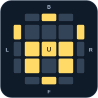
cubeio-oll-34-v1F U R' U' R' F' R U R2 U' R' y2 x2 z2
R U R2 U' R' F R U R U' F'
R U R' U' B' R' F R F' B
y2 R U R2 U' R' F R U R U' F'
y f R f' U' r' U' R U M'
F R U R' U' R' F' r U R U' r'
y2 R U R' U' B' R' F R F' B
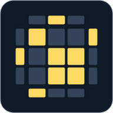
cubeio-oll-35-v1R U2 R' F R' F' R2 U2 R'
R U2 R' R' F R F' R U2 R'
R U2 R2 F R F' R U2 R'
f R U R' U' f' R U R' U R U2 R'
R U2 R' d' R' F R U' R' F' R
y L' U2 L2 F' L' F L' U2 L
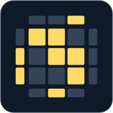
cubeio-oll-36-v1F' L F L' U' L' U' L U L' U L y2 x2 z2
L' U' L U' L' U L U L F' L' F
y2 R' U' R U' R' U R U R B' R' B
y2 L' U' L U' L' U L U L F' L' F
y R U R2 F' U' F U R2 U2 R'
y2 R U R' F' R U R' U' R' F R U' R' F R F'
R U R' U' F' U2 F U R U R'
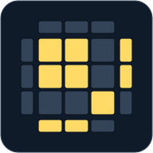
cubeio-oll-37-v1F R U' R' U R U R' F'
F R' F' R U R U' R'
F R U' R' U' R U R' F'
y F' r U r' U' r' F r
y2 r2 D' r U' r' D r U r
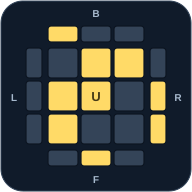
cubeio-oll-38-v1F R' F' R U R U R' U' R U' R'
R U R' U R U' R' U' R' F R F'
y F R U' R' S U' R U R' f'
r U R' U' r' F R U R U' R' F'
y2 L U L' U L U' L' U' L' B L B'
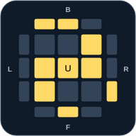
cubeio-oll-39-v1L U F' U' L' U L F L' y' y
L F' L' U' L U F U' L'
y2 R B' R' U' R U B U' R'
y L F' L' U' L U F U' L'
y' f' r U r' U' r' F r S
y' R U R' F' U' F U R U2 R'
y' f' L F L' U' L' U L S
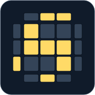
cubeio-oll-40-v1R' U' F U R U' R' F' R y' y
R' F R U R' U' F' U R
y R' F R U R' U' F' U R
y' f R' F' R U R U' R' S'
R r D r' U r D' r' U' R'
y' L' U' L F U F' U' L' U2 L
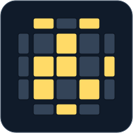
cubeio-oll-41-v1F U R U' R' F' R U2 R' U' R U' R' y2 x2 z2
R U R' U R U2 R' F R U R' U' F'
y2 R U R' U R U2 R' F R U R' U' F'
y2 F U R2 D R' U' R D' R2 F'
y' S U' R' F' U' F U R S'
M U' F' L' U' L U F M'
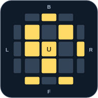
cubeio-oll-42-v1F U R U' R' F' R' U2 R U R' U R
R' U' R U' R' U2 R F R U R' U' F'
y F S' R U R' U' F' U S
y R' F R F' R' F R F' R U R' U' R U R'
y R' U' F2 u' R U R' D R2 B
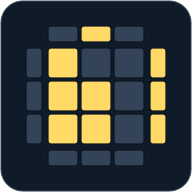
cubeio-oll-43-v1f' U' L' U L f
F' U' L' U L F
R' U' F R' F' R U R
y R' U' F' U F R
y2 F' U' L' U L F
f' L' U' L U f
B' U' R' U R B
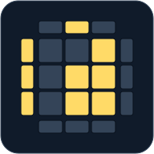
cubeio-oll-44-v1f U R U' R' f'
F U R U' R' F'
y2 f R U R' U' f'
f R U R' U' f'
y2 F U R U' R' F'
y R U B U' B' R'
y' L U F U' F' L'
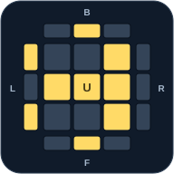
cubeio-oll-45-v1F U R U' R' F'
F R U R' U' F'
y R' F' U' F U R
y2 f U R U' R' f'
y2 F' L' U' L U F
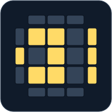
cubeio-oll-46-v1R' U' F R' F' R U R
R' U' R' F R F' U R
R' F' U' F R U' R' U2 R
y F R U R' U' F' U' R U R' U R U2 R'
l' U2 L2 F' L' F U L' U l
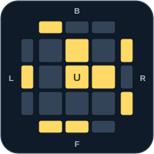
cubeio-oll-47-v1F' U' L' U L U' L' U L F
R' U' R' F R F' R' F R F' U R
F' L' U' L U L' U' L U F
y' F U R U' R' F' R U R' U R U2 R'
y' F R' F' R U2 R U' R' U R U2 R'
y' R' F' U' F U F' U' F U R
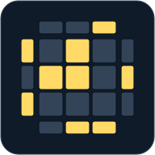
cubeio-oll-48-v1F U R U' R' U R U' R' F'
F R U R' U' R U R' U' F'
y2 f U R U' R' U R U' R' f'
R U2 R' U' R U R' U2 R' F R F'
F R' F' U2 R U R' U R2 U2 R'
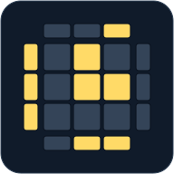
cubeio-oll-49-v1r' U r2 U' r2 U' r2 U r' y2 x2 z2
r U' r2 U r2 U r2 U' r
y2 r U' r2 U r2 U r2 U' r
l U' l2 U l2 U l2 U' l
R B' R2 F R2 B R2 F' R
y2 R' F R' F' R2 U2 B' R B R'
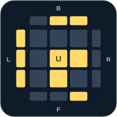
cubeio-oll-50-v1r U' r2 U r2 U r2 U' r
r' U r2 U' r2 U' r2 U r'
y2 R' F R2 B' R2 F' R2 B R'
y' R U2 R' U' R U' R' F R U R' U' F'
y2 l' U l2 U' l2 U' l2 U l'
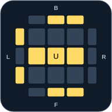
cubeio-oll-51-v1f U R U' R' U R U' R' f'
F U R U' R' U R U' R' F'
y2 f R U R' U' R U R' U' f'
f R U R' U' R U R' U' f'
y2 F U R U' R' U R U' R' F'
y' R' U' R' F R F' R U' R' U2 R
y r' F' U' F U F' U' F U r
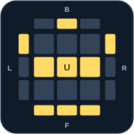
cubeio-oll-52-v1F R U R' d R' U' R U' R' y
R U R' U R U' B U' B' R'
y2 R' F' U' F U' R U R' U R
R U R' U R U' y R U' R' F'
R U R' U R d' R U' R' F'
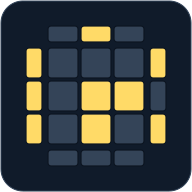
cubeio-oll-53-v1r' U2 R U R' U' R U R' U r
l' U2 L U L' U' L U L' U l
y2 r' U2 R U R' U' R U R' U r
y r' U' R U' R' U R U' R' U2 r
r' U' R U' R' U R U' R' U2 r
y2 l' U' L U' L' U L U' L' U2 l
y r' U2 R U R' U' R U R' U r
y' l' U2 L U L' U' L U L' U l
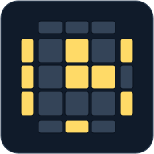
cubeio-oll-54-v1r U2 R' U' R U R' U' R U' r'
r U2 R' U' R U R' U' R U' r'
y r U R' U R U' R' U R U2 r'
r U R' U R U' R' U R U2 r'
y' r U2 R' U' R U R' U' R U' r'
y' r U r' R U R' U' R U R' U' r U' r'
y2 l U L' U L U' L' U L U2 l'
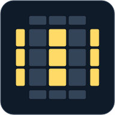
cubeio-oll-55-v1F R' F' U2 R U R' U R2 U2 R'
R' F R U R U' R2 F' R2 U' R' U R U R'
y R U2 R2 U' R U' R' U2 F R F'
R U2 R2 U' R U' R' U2 F R F'
y R' F U R U' R2 F' R2 U R' U' R
y R' F R U R U' R2 F' R2 U' R' U R U R'
r U2 R2 F R F' U2 r' F R F'
cubeio-oll-56-v1r U r' R U R' U' R U R' U' r U' r'
r' U' r U' R' U R U' R' U R r' U r
r U r' U R U' R' U R U' R' r U' r'
r U r' U R U' R' U R U' M' U' r'
r U r' U R U' R' M' U R U2 r'
F R U R' U' R F' r U R' U' r'
cubeio-oll-57-v1r U R' U' M U R U' R'
R U R' U' M' U R U' r'
y R U' R' S' R U R' S
y R U R' S' R U' R' S
R U R' U' R' r U R U' r'

cubeio-pll-aa-v1x R2 D2 R U R' D2 R U' R x'
x L2 D2 L' U' L D2 L' U L'
y' x' L' U L' D2 L U' L' D2 L2
y x R' U R' D2 R U' R' D2 R2
y2 x' R2 D2 R' U' R D2 R' U R'
x R' U R' D2 R U' R' D2 R2 x'
y' x L2 D2 L' U' L D2 L' U L'
l' U R' D2 R U' R' D2 R2 x'
y x' R2 D2 R' U' R D2 R' U R' x
cubeio-pll-ab-v1x R' U R' D2 R U' R' D2 R2 x'
x' L2 D2 L U L' D2 L U' L
y x L U' L D2 L' U L D2 L2
y2 x R2 D2 R U R' D2 R U' R
y' x' R U' R D2 R' U R D2 R2
x R2 D2 R U R' D2 R U' R x'
y' x L U' L D2 L' U L D2 L2
y x' R U' R D2 R' U R D2 R2 x
R' B' R U' R D R' U R D' R2 B R
cubeio-pll-e-v1x' D R U R' D' R U' R' D R U' R' D' R U R' x y' y
x' L' U L D' L' U' L D L' U' L D' L' U L D
x' R U' R' D R U R' D' R U R' D R U' R' D'
y x' R U' R' D R U R' D' R U R' D R U' R' D' x
y R' U' R' D' R U' R' D R U R' D' R U R' D R2
R2 U F' R' U R U' R' U R U' R' U R U' F U' R2
y x' L' U L D' L' U' L D L' U' L D' L' U L D
cubeio-pll-f-v1R' U' R U' R' U R U R2 F' R U R U' R' F U R y' y
R' U' F' R U R' U' R' F R2 U' R' U' R U R' U R
y R' U' F' R U R' U' R' F R2 U' R' U' R U R' U R
y R' F R f' R' F R2 U R' U' R' F' R2 U R' S
R' U R U' R2 F' U' F U R F R' F' R2
y R2 F R F' R' U' F' U F R2 U R' U' R

cubeio-pll-ga-v1R' U' R D' U R2 U R' U R U' R U' R2 D
R2 U R' U R' U' R U' R2 U' D R' U R D'
R2 u R' U R' U' R u' R2 y' R' U R
R2 U R' U R' U' R U' R2 D U' R' U R D'
R2 u R' U R' U' R u' R2 F' U F
y R U R' F' R U R' U' R' F R U' R' F R2 U' R' U' R U R' F'
D' R2 U R' U R' U' R U' R2 U' D R' U R
cubeio-pll-gb-v1R2 U R' U R' U' R U' R2 D U' R' U R D'
R' U' R U D' R2 U R' U R U' R U' R2 D
y F' U' F R2 u R' U R U' R u' R2
D R' U' R U D' R2 U R' U R U' R U' R2
R' d' F R2 u R' U R U' R u' R2
cubeio-pll-gc-v1D' R U R' U' D R2 U' R U' R' U R' U R2
R2 U' R U' R U R' U R2 U D' R U' R' D
y2 R2 F2 R U2 R U2 R' F R U R' U' R' F R2
R2 u' R U' R U R' u R2 y R U' R'
R2 U' R U' R U R' U R2 D' U R U' R' D
D R2 U' R U' R U R' U R2 D' U R U' R'
R2 u' R U' R U R' u R2 f R' f'
cubeio-pll-gd-v1R2 U' R U' R U R' U R2 D' U R U' R' D
R U R' U' D R2 U' R U' R' U R' U R2 D'
R U R' y' R2 u' R U' R' U R' u R2
D' R U R' U' D R2 U' R U' R' U R' U R2
y R2 F' R U R U' R' F' R U2 R' U2 R' F2 R2
cubeio-pll-h-v1M2 U' M2 U2 M2 U' M2
M2 U M2 U2 M2 U M2
M2 U' M2 U2 M2 U' M2
R2 S2 R2 U' R2 S2 R2
M2 U2 M2 U M2 U2 M2
cubeio-pll-ja-v1L' R' U2 R U R' U2 L U' R y' y
x R2 F R F' R U2 r' U r U2
y2 L' U' L F L' U' L U L F' L2 U L
y' R' U L' U2 R U' R' U2 R L
y R' U L' U2 R U' R' U2 R L
y2 x R2 F R F' R U2 r' U r U2 x'
L' U' L F L' U' L U L F' L2 U L
R U' L' U R' U2 L U' L' U2 L
cubeio-pll-jb-v1R U R2 F' R U R U' R' F R U' R'
R U R' F' R U R' U' R' F R2 U' R'
R U2 R' U' R U2 L' U R' U' L
r' F R F' r U2 R' U R U2 R'
L' U R U' L U2 R' U R U2 R'
cubeio-pll-na-v1R U R' U2 R U R2 F' R U R U' R' F R U' R' U' R U' R'
R U R' U R U R' F' R U R' U' R' F R2 U' R' U2 R U' R'
z U R' D R2 U' R D' U R' D R2 U' R D'
F' R U R' U' R' F R2 F U' R' U' R U F' R'
R F U' R' U R U F' R2 F' R U R U' R' F
r' D r U2 r' D r U2 r' D r U2 r' D r U2 r' D r
cubeio-pll-nb-v1F r' F' r U r U' r2 D' F r U r' F' D r
R' U R U' R' F' U' F R U R' F R' F' R U' R
z D' R U' R2 D R' U D' R U' R2 D R' U
r' D' F r U' r' F' D r2 U r' U' r' F r F'
R' U L' U2 R U' L R' U L' U2 R U' L
R' U R U' R' F' U' F R U R' U' R U' f R f'
cubeio-pll-ra-v1R U2 R D R' U R D' R' U' R' U R U R' y' y
R U' R' U' R U R D R' U' R D' R' U2 R'
R U R' F' R U2 R' U2 R' F R U R U2 R'
y' L U2 L' U2 L F' L' U' L U L F L2
y R U' R' U' R U R D R' U' R D' R' U2 R'
y R U R' F' R U2 R' U2 R' F R U R U2 R'
L U2 L' U2 L F' L' U' L U L F L2
y R U' R' U' R U R' U R' D' R U' R' D R2 U R'
cubeio-pll-rb-v1R' U R U R' U' R' D' R U R' D R U2 R
R2 F R U R U' R' F' R U2 R' U2 R
y' R' U2 R U2 R' F R U R' U' R' F' R2
R' U2 R' D' R U' R' D R U R U' R' U' R
R' U2 R U2 R' F R U R' U' R' F' R2
y R2 F R U R U' R' F' R U2 R' U2 R
y R' U R U R' U' R' D' R U R' D R U2 R

cubeio-pll-t-v1F R U' R' U R U R2 F' R U R U' R'
R U R' U' R' F R2 U' R' U' R U R' F'
l b d' L' U' F U2 L' U' L' U L U' f' S M r u E U' R'
R U R' U' R' F R2 U' R' U F' L' U L
R2 u R2 u' R2 F2 u' F2 u F2
cubeio-pll-ua-v1M2 U' M' U2 M U' M2
M2 U M U2 M' U M2
R U' R U R U R U' R' U' R2
y2 R2 U' R' U' R U R U R U' R
y2 M2 U M U2 M' U M2
R U R' U R' U' R2 U' R' U R' U R
y R2 U' S' U2 S U' R2
y2 R U' R U R U R U' R' U' R2
cubeio-pll-ub-v1M2 U M' U2 M U M2
M2 U' M U2 M' U' M2
R2 U R U R' U' R' U' R' U R'
y2 R' U R' U' R' U' R' U R U R2
y2 M2 U' M U2 M' U' M2
R' U R' U' R' U' R' U R U R2
y2 R2 U R U R' U' R' U' R' U R'
cubeio-pll-v-v1D2 R' U R D' R2 U' R' U R' U R' D' R U2 R'
R' U R' U' y R' F' R2 U' R' U R' F R F
R' U R' U' R D' R' D R' U D' R2 U' R2 D R2
z D' R2 D R2 U R' D' R U' R U R' D R U' z'
R U2 R' D R U' R U' R U R2 D R' U' R D2
x' R' F R F' U R U2 R' U' R U' R' U2 R U R' U'
R' U R U' R' f' U' R U2 R' U' R U' R' f R
y R U' R U R' D R D' R U' D R2 U R2 D' R2
cubeio-pll-y-v1F R' F' R U R U' R' F R U' R' U R U R' F'
F R U' R' U' R U R' F' R U R' U' R' F R F'
F R' F R2 U' R' U' R U R' F' R U R' U' F'
R2 U' R2 U' R2 U F U F' R2 F U' F'
F R' F' R U R U' R2 U' R U R f' U' f
cubeio-pll-z-v1M U2 M2 U2 M U' M2 U' M2
M' U M2 U M2 U M' U2 M2
y M' U' M2 U' M2 U' M' U2 M2
y M2 U M2 U M' U2 M2 U2 M'
M2 U' M2 U' M' U2 M2 U2 M'
M2 U M2 U M' U2 M2 U2 M'
M' U' M2 U' M2 U' M' U2 M2
y M2 U' M2 U' M' U2 M2 U2 M'
y M' U M2 U M2 U M' U2 M2